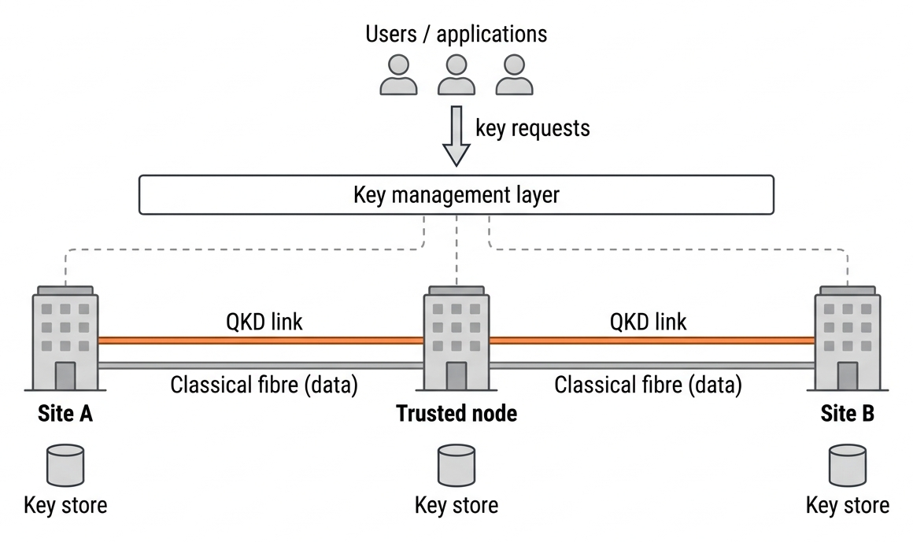

How Should BB84 Coexist with Classical Communication in Hybrid Networks?

In one sentence
Quantum key distribution only produces secret keys — the actual data still travels over ordinary networks — so how do we design the two together, so that keys arrive where and when the traffic needs them, and the system degrades gracefully instead of failing when the quantum link falters?
What is the problem?
Imagine a bank with two data centers across a city, linked by a QKD system running BB84. A common misconception is that the bank's data is now "sent quantumly." It is not. The quantum link does one thing: it slowly produces a stream of shared secret bits at both ends. The bank's transactions still travel over normal fiber, encrypted with those bits.
A quick reminder of what BB84 gives you. Alice sends single photons in randomly chosen bases; Bob measures in random bases; over a public channel they keep only the positions where the bases matched (sifting). They check a sample for errors — the quantum bit error rate (QBER) — because an eavesdropper who measures the photons inevitably causes errors. If the error rate is low enough, they fix the remaining errors and apply privacy amplification, a compression step that removes any partial knowledge an eavesdropper could have. Out comes a key that is secret by the laws of physics, not by an assumption that some maths problem is hard.
The catch is that this key arrives slowly — typically thousands to perhaps millions of secret bits per second on a good metropolitan link, falling steeply with distance — while the data link next to it may carry billions of bits per second. And a single QKD link only reaches roughly a hundred kilometers of fiber before losses make the key rate too small.
So the real system is a hybrid: a quantum layer that makes keys, a classical layer that carries data, and something in between that decides who gets which key, when. This open problem asks: how should the quantum and classical parts be designed as one reliable system, rather than bolted together?
Why does it matter?
- Keys are a scarce, perishable resource. If the key rate cannot keep up with demand, either traffic waits, or keys get reused for longer than intended, quietly weakening the security that QKD was meant to provide.
- QKD links go down. Fiber gets bent, detectors need recalibration, an attack drives the error rate up. A network that simply stops when the quantum link stops will never be deployed in anything critical.
- Real deployments are networks, not links. Test beds in Europe, Japan and China already connect many sites through intermediate nodes. The question of how to share keys fairly and efficiently across many users is unavoidable.
- The security story must hold end to end. A perfect quantum key is worthless if the node that relays it, the software that hands it out or the classical protocol that uses it is the weak point.
What would a solution look like?
Most proposals converge on a layered picture: QKD links at the bottom, a key management layer in the middle that stores and routes keys, and applications on top that request keys through a standard interface — much like they would ask an operating system for random numbers.

Within that picture, a good design has to answer four practical questions:
| Design question | What it means in plain words |
|---|---|
| Rate matching | How do we use a slow key stream to protect a fast data stream — and how often must keys be refreshed? |
| Graceful degradation | When the key store runs low or a link fails, what does the system do — wait, reroute, or fall back to a classical method? |
| Key allocation | With many users and links sharing limited key, who gets served first, and how do we avoid one user starving the others? |
| Joint optimization | Can latency, throughput and security level be traded off together, rather than tuned separately by different teams? |
The key idea: the quantum key is a budget, not a pipe
It helps to stop thinking of QKD as a secure "pipe" and to think of it as a budget that refills at a variable rate.
There are two very different ways to spend that budget. The first is the one-time pad: XOR the data with an equal amount of fresh key. This is the only way to get encryption that is secure no matter how much computing power an attacker has — but it uses one bit of key for every bit of data, which a QKD link usually cannot afford for large traffic. The second is to use the quantum key to frequently refresh the key of a classical cipher such as AES. This uses very little key and handles any data rate, but the overall security now also rests on the cipher, not purely on physics.
Real systems will mix the two: one-time-pad for small, very sensitive messages, frequent AES re-keying for bulk traffic. Deciding that mix, minute by minute, based on how full the key stores are and how important each flow is, is a scheduling problem much like managing bandwidth or battery — and that is the systems view I think is underexplored.
The trusted-node problem
Distance adds a second twist. Because a single link only reaches so far, long routes are built from several links joined at trusted nodes. The node shares one key with Site A and another with Site B; it uses them to pass a key from A to B. This works, but the node briefly knows the key, so it must be physically secured and trusted. The security of the whole route is only as strong as its least-trusted node. Quantum repeaters would remove this need, but they are not yet practical, so for now network design has to choose routes and trust levels with care.
Why is it hard?
- Two very different time scales. Key generation depends on physics and changes slowly and unpredictably; data traffic is bursty and changes in milliseconds. Buffering bridges the gap, but buffers can run dry exactly when traffic peaks.
- Sharing fiber hurts the quantum signal. Running the quantum channel on the same fiber as strong classical data saves money, but light from the data channel scatters into the quantum channel and raises the error rate (and therefore lowers the key rate).
- Trust is not uniform. Every trusted node, key store and management server becomes a target. Routing must consider not just capacity but which nodes a given user is willing to trust.
- Fallbacks can become backdoors. If the system silently drops to a weaker classical method when QKD fails, an attacker only needs to disrupt the quantum link to force the downgrade.
- Few shared benchmarks. There is no widely agreed way to measure "how good" a hybrid design is end to end, which makes different proposals hard to compare.
What has been tried so far
- Network test beds. Large field trials — including networks in Vienna, Tokyo and a space-to-ground network in China — have shown that multi-node QKD with trusted relays and key management can run for long periods.
- Standards for key delivery. Bodies such as ETSI and ITU-T have defined how applications request keys from a QKD system and how QKD networks are layered, which makes key management a recognizable component rather than a custom script.
- Coexistence on one fiber. Experiments have shown that QKD can share fiber with high-speed classical data, by choosing wavelengths and filters carefully to keep scattered light out of the quantum channel.
- Routing and resource allocation. Research on routing keys through networks of trusted nodes, and on scheduling key resources across many users, often borrowing ideas from classical traffic engineering.
- Hybrid with post-quantum cryptography. Combining QKD keys with keys from post-quantum algorithms, so that an attacker must break both to read the traffic.
What I see less of is work that treats all of this as one control problem: given forecasts of key supply (from each link) and data demand (from each application), how should the system allocate, buffer and fall back so that the security and latency targets are both met?
How I would approach it
- Build a network simulator with a few QKD links of different, time-varying key rates and a realistic mix of classical traffic, including bursts.
- Model each link's key supply using the kind of adaptive link from OP-17, and each application's demand with a security class (one-time-pad, frequent re-keying, or best effort).
- Compare simple policies — first come first served, fixed quotas, priority by security class — against an optimizer that uses short-term forecasts of supply and demand.
- Measure what matters to an operator: how often traffic waits for key, how often it falls back, how long keys stay in use, and how much each node must be trusted.
- Add disruption: cut a QKD link or raise its error rate, and check that the system degrades in a controlled way and never downgrades security silently.
Questions still open
- What is a good, shared metric for the end-to-end quality of a hybrid quantum-classical network?
- How should key be split between one-time-pad and cipher re-keying as supply and demand change?
- Can forecasting key supply and traffic demand meaningfully reduce waiting and fallbacks, and what happens when the forecast is wrong?
- How should routes be chosen when nodes carry different levels of trust?
- What is a safe fallback policy when QKD fails, one that an attacker cannot exploit to force a downgrade?
- How should link-level adaptation (see OP-17) and the realistic-noise limits of BB84 (see OP-16) feed into network-level planning?
This problem sits on top of OP-16 (how robust a single BB84 link really is) and OP-17 (how a link adapts to its channel): those determine the key supply that a hybrid network has to work with.
Work on this together
If you work on QKD networks, key management, network scheduling or security engineering — or you operate infrastructure where QKD is being considered — I would love to hear from you. Pointing out where the systems view is missing something important is just as welcome.
Reach out about OP-18Further reading
- Bennett & Brassard — Quantum Cryptography: Public Key Distribution and Coin Tossing (IEEE ICCSSP 1984)
- Peev et al. — The SECOQC Quantum Key Distribution Network in Vienna (New Journal of Physics 2009)
- Sasaki et al. — Field Test of Quantum Key Distribution in the Tokyo QKD Network (Optics Express 2011)
- Patel et al. — Coexistence of High-Bit-Rate Quantum Key Distribution and Data on Optical Fiber (Physical Review X 2012)
- Diamanti, Lo, Qi & Yuan — Practical Challenges in Quantum Key Distribution (npj Quantum Information 2016)
- Pirandola et al. — Advances in Quantum Cryptography (Advances in Optics and Photonics 2020)
- Chen et al. — An Integrated Space-to-Ground Quantum Communication Network over 4,600 Kilometers (Nature 2021)